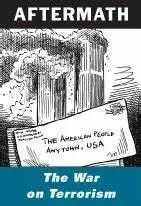

收录于合集

作品简介
【作者】 华莱士·蒂斯（Wallace J. Thies），美国天主教大学政治学系教授，曾任美国外交关系协会研究员。主要研究方向为国际关系理论、军事战略研究、跨大西洋关系研究。已出版专著：When Governments Collide: Coercion and Diplomacy in the Vietnam Conflict (1980); The Atlantic Alliance, Nuclear Weapons and European Attitudes (1983); Friendly Rivals: Bargaining and Burden-Shifting in NATO (2003), Why NATO Endures (2009).
【编译】 卫艺璇（国政学人编译员，复旦大学国务学院国际关系博士生）
【校对】 李思
【审核】 姚寰宇
【排版】 高辉
【美编 】聂涵琳
【来源】 Wallace J. Thies: Why Containment Works: Power, Proliferation and Preventive War , New York: Cornell University Press, 2020
遏制战略何以成功？
Why Containment Works: Power, Proliferation and Preventive War
华莱士·蒂斯（Wallace J. Thies）
内容提要
本书的核心内容是关于一组应对威胁的战略选择——遏制（containment）与预防性战争（preventive war）。经典的遏制战略是由乔治·凯南最初提出并在冷战期间美国对苏展开的战略，此外美国也对利比亚、伊朗、朝鲜等所谓“流氓国家（rogue state）”实施过遏制战略。预防性战争战略在本书中主要以小布什政府提出的“布什主义（the Bush Doctrine）”为代表，布什主义强调通过先发制人地打击预防潜在地威胁，其出台正是建立在对遏制战略已然失效的总体判断之上。本书作者在对“布什主义”的基本原则进行驳斥后提出了遏制战略有效性的四个来源：放弃主动权（relinquish the initiative）、行动与反行动（move and countermove）中大国的优势、盟友的帮助（others will help）和民主制度自身的优越性（the strength of democracy），并通过五个案例对上述四点进行检验和论证。
文章导读
01
对遏制战略失效的判断
与“布什主义”六原则
遏制战略最早由乔治·凯南于1947年提出，也是贯穿整个冷战时期的美国对苏联的大战略。除经典的对苏遏制之外，在冷战中后期及后冷战时期，美国对其他地区性国家也实施过长期的遏制战略。本书指出，冷战时期美国对苏展开的遏制本质上仍是要维持势力均衡，旨在从政治、军事、经济等多个维度对苏联进行围堵，避免苏联扩大其势力范围。而在冷战中后期及后冷战时期，美国的遏制对象更多是地区性“流氓国家（rogue state）”，如利比亚（从1979年美国驻利比亚代办处被焚烧开始，至2003年卡扎菲宣布放弃发展核武器暂时结束）、伊朗（从1979年伊朗人质危机开始，至2015年伊核协议签署暂时结束）、伊拉克（从1980年两伊战争爆发，至2003年伊拉克战争爆发）等。针对这些国家的遏制并非是为了维持均势，而旨在长期地阻挠敌对国家的战略规划（thwart an adversary’s plot and schemes），因此衡量遏制战略成功与否的关键在于敌对国家的战略规划是否最终实施。
9·11事件的冲击很大程度上重塑了小布什政府的外交和国防战略，使其认为遏制战略已经失效，并很快转向强调对敌对国家及其行为的预防（prevention）和先发制人地打击（preemption strike）。 小布什政府时期的外交和国防政策转向被作者总结为 “布什主义六原则（six principles of the Bush Doctrine）”，其内容如下：
第一，遏制战略已经失效。 冷战时期美国面临的是来自苏联一国的切实威胁，而后冷战时期美国面对的是多个“流氓国家”和似乎无孔不入的恐怖主义，传统的遏制战略无力应对新型的威胁，正如小布什所说，“新的威胁要求我们有新的思维”；
第二，威慑是远远不够的。 威慑与遏制通常被视为一枚硬币的两面，而“布什主义”认为威慑是一种对威胁的被动反应，相当于失去了决定“何时报复、对谁报复的”的主动权。这种主动性的失去在9·11事件的冲击下显得尤为难以接受。如2002年小布什政府的国情咨文写道，“传统的威慑手段在应对‘邪恶轴心’时是无效的，美国必须“在威胁发生之前快速而坚定地行动”；
第三，美国不具备时间优势（time is not on our side）。 9·11事件的刺激令小布什政府坚信，“美国要么消极地等待另一次恐怖袭击，要么采取积极而果决地行动避免另一次恐怖袭击”；
第四，行动总比等待好。 布什主义将遏制视为一种消极等待，可能意味着“另一次9·11”，其危险和成本是难以承受的。也正因如此，小布什政府认为传统多边主义的路径会延缓行动的进度以及限制美国的权力，只有单边的行动才能更好地维护美国的利益；
第五，进攻总比防御好。 遏制战略在防御某个实际国家带来的威胁时可能是有效的，而当前美国面对是一个无实体的恐怖主义网络，所以难以对其进行针对性的防御和遏制，这就要求必须主动进行出击；
第六，预防性战争具有自身优势。 其优势在于能够从源头上避免 “流氓国家”获得大规模杀伤性武器（WMD），从而避免威胁到美国及其盟友的安全。

02
**
**
对“布什主义”六原则的驳斥
“布什主义”的出台建立在对遏制战略已然失效的总体判断之上，但果真如此吗？本书作者对上述“布什主义”六原则逐一进行了驳斥。
第一，遏制战略在应对恐怖主义和多个“流氓国家”的威胁时并非是无效的。 遏制并非意味着消极应对，相反，遏制是以各种形式和手段展开的一系列行动。乔治·凯南曾写道，“遏制可以被理解为遏制施加国和被遏制国之间的一种进攻与躲闪（thrust and parry）的游戏，一个行动与反行动（move and countermove）的博弈”。遏制的施加国与被遏制国都有可能采取一系列行动去维持或挑战现状，所以，遏制战略表面上看起来是一种针对对方行为的被动反应且缺乏政策的连贯性，甚至于遏制的施加国似乎丧失了战略主动性，但这种表象是具有欺骗性的，尤其是，如果实施遏制战略的一方是超级大国，其进行“被动反应”的资源和手段方式是远超过被遏制国的。
第二，威慑在应对新型威胁时效果依然显著。 作者举例指出，被小布什认定为是“邪恶轴心”的国家确有入侵邻国的历史（如伊拉克引发的两伊战争和海湾战争），但彼时美国并未在入侵行动发生之前尝试对其进行遏制。相反，美国随后对这些国家进行的威慑和遏制都被证明是有效的。即便是被渲染为“非理性的”、“充满宗教狂热”的领袖也并非是无法被威慑的。
第三，时间是可以争取的。 以争取时间为目的的外交似乎因不够强硬而受到诟病，但在以无政府为主要特征的国际社会中，时间作为一种珍贵的资产是可以争取的。遏制战略相当于一种对时间的“冻结”，通过遏制争取到的时间能给敌对国家的决策者一个改变其战略优先级、设置新的外交议程的机会，原先存在的威胁有可能随之化解。相反，预防性战争则是快速推动了事态的发展，并对历史进行了改写，本质上放弃了威胁最终化解的可能性。
第四，等待未必是一个糟糕的选择。 正如对第三条原则的驳斥，很多时候我们无法预估战争是否真的不可避免，甚至很多时候冲突可能会随着事态的发展逐渐平息。过快地进入预防性战争反而可能意味着支付可能本不必要的成本。
第五，进攻未必比防御更有效。 比如放弃主动权（relinquish the initiative）作为一种防御性策略就不失为一种有效的应对威胁的方式，同时也是遏制战略有效性的来源之一（这一点将在第三节详细展开）。
第六，预防性战争的最大悖论在于一旦成功地发起预防性战争之后往往难以善后。 冷战期间，主张对苏联展开预防性战争的观点都难以回避“成功地发起预防性战争之后如何处理苏联”的问题。历史证明小布什政府后来也深陷于“成功地发起预防性战争之后如何处理伊拉克”的问题之中。
上述对“布什主义六原则”的驳斥也是对预防性战争的批判，那么，什么因素能保证继续实施遏制战略的成功呢？也即回到本书的标题，遏制战略为何有效呢？作者提出了遏制战略有效性的四个来源：放弃主动权；行动与反行动中大国的优势；来自盟友的支持；民主制度的优越性，并运用五个案例加以检验和论证。
03
遏制战略有效性的四个来源
本书的第二章至第五章为案例研究，作者通过以下五个案例对遏制战略有效性的四个来源进行检验和论证：（1）自1979年至2003年针对利比亚卡扎菲政权的遏制；（2）两伊战争期间针对伊朗和伊拉克的“双重遏制”；（3）自1980年至2003年针对伊拉克萨达姆政权的遏制；（4）针对伊拉克萨达姆政权的预防性战争（伊拉克战争）；（5）自1979年至2015年因伊核问题对伊朗的遏制。此外，美国对苏遏制（约1946年至1991年）和美国对华遏制（约1949年至1972年）作为遏制战略的两个经典案例也贯穿在作者论述中。
第一，放弃主动权。 传统的军事战略通常认为，当国家处于被威胁状态或战争边缘时，应当抓住机会主动行动，而非被动地对对手的行为做出回应。但托马斯·谢林（Thomas Schelling）指出在核时代相反的逻辑：当核战争成为一种潜在的最终选择时，只有提前对未来的诸多可能性有足够的想象力和充分规划的主动出击才有一定的可行性。相反，如果纯粹只是对敌对行为进行预防的主动出击实际上反而将主动权拱手让给了对方。放弃主动权作为遏制战略的一种具体策略，需要遏制的施加国首先根据自己的优势和偏好安排现状，然后放弃主动权，将是否要改变现状的选择推给对手。如此，留给对手的选项其实极为有限，要么选择与遏制施加国开战，要么选择接受（符合遏制施加国偏好和优势的）现状（Schelling，1960）。在核时代选择与遏制施加国开战的后果通常都是无法现象的，因此会迫使被遏制国不得不接受现状。且接受现状往往需要对手国的决策者支付较高的国内观众成本。美国决策者在针对超级大国和地区性小国的遏制中都使用过这一策略。
比如，第一次柏林危机是对苏遏制中体现“放弃主动权”的一次典型案例。在第一次柏林危机中，苏联率先切断西占区与柏林之间的水陆交通，通过实施货运封锁来试图改变西占区率先发行新货币的现状。而此前在对苏遏制战略的指导下，美国在德国的战略态势本已符合美国的偏好和优势，所以即便在苏联的威胁下，美国只要选择继续维持其在该地区的现状即可。所以美英法选择向柏林进行物资空投，以空中反封锁应对苏联的水陆封锁。更关键的是，美英法三国有实力长期维持对柏林的空投计划。如此，留给苏联的选择就很有限，要么走向战争，要么选择接受符合美国偏好的现状。
又比如第一次锡德拉湾事件也展现了美国在遏制利比亚卡扎菲政权过程中“放弃主动权”的策略。1973年，时任利比亚领导人卡扎菲出于对美国在第四次中东战争中对以色列援助的不满，宣布利比亚以北的锡德拉湾属于利比亚临海，除苏联外的外国飞机和船只不得入内。此宣言显然未得到西方社会的认可。1981年里根上台后，为同时遏制苏联和利比亚，里根政府针对锡德拉湾的事态作出了如下安排：首先美国派遣一支以尼米兹号和福瑞斯特号为首的联合舰队进入锡德拉湾进行联合演习，并进入了卡扎菲宣称为利比亚临海的区域。此举相当于在锡德拉湾地区作出了符合美国偏好和优势的安排。此后卡扎菲的选择其实极为有限：要么选择与美国的海军舰队展开正面冲突，要么选择接受美军进入锡德拉湾的现状。
第二，行动与反行动中大国的优势。 如前所述，遏制是遏制施加国与被遏制国之间行动与反行动的博弈，其目的在于阻止或避免被遏制国实现原本计划的行为或战略，至于达成目的的手段和方式则是灵活多样的。美国作为一个超级大国，其在反制过程中可动用的资源以及手段的多样性上的优势是很明显的。
比如冷战初期美国对苏的遏制战略中，美国就综合运用军事手段和经济手段，充分展现了其反制的多样性和灵活性。当苏联介入希腊内战并试图影响其政治局势时，美国选择对希腊和土耳其进行经济援助作为回应。当苏联随后在捷克斯洛伐克发起政变时，美国选择向英国部署B-29“超级空中堡垒”作为回应。而当苏联引发第一次柏林危机威胁后，美国选择向柏林空投并发起援助欧洲的马歇尔计划作为回应。
第三，来自盟友的支持。 冷战结束后美国的全球同盟体系进一步稳固甚至强化，作者认为这种超级大国不但没有被联合制衡，反而仍获得许多国家支持的局面可以说是历史少有的。盟国对美国的支持也会提高美国在遏制过程中反制的能力。最典型的运用就是在联合国框架内对多个对象国实施的国际制裁。
第四，民主制度自身的优越性。 冷战早期在美国有不少对遏制战略的负面评论，如著名外交政策评论家沃尔特·李普曼（Walter Lippmann）、前中情局局长和前防长詹姆斯·史莱辛格（James Schlesinger）都对民主制度持悲观预期，认为遏制战略的耗时过长，可能并不适合民主制国家。但此后在冷战“胜利”的鼓舞下，新自由主义认为民主政体在维持政权存续的能力上强于其他政体，因此耗时长的战略对民主制国家来说并不构成问题。
译者评述
本书首先驳斥了布什主义的重要原则，并在此基础上以美国在特定时段内对利比亚、伊拉克和伊朗等地区性国家的遏制政策为案例，提出并论证了遏制战略有效性的四个来源，分别为放弃主动权、行动与反行动中的大国优势、盟友的帮助以及民主制度自身的优越性。本书作者的观点具有鲜明的自由主义建制派色彩，尤其是在遏制战略有效性的四个来源中，第三点对传统同盟关系的重视以及第四点对民主制度的制度自信无不体现了这种价值倾向。
考虑到本书出版于2020年第四季度，初读本书笔者总感到或多或少有些不合时宜。 第一，本书关键性结论的提出是在对布什主义批判的基础之上完成的。但小布什的任期在2008年就已结束，且对以“布什主义”为代表的单边主义政策的反思在奥巴马政府时期在美国就已屡见不鲜；第二，本书的案例研究部分用五个章节的篇幅分析并评估了美国对利比亚、伊朗、伊拉克等地区性国家的一段时期内遏制战略的得失。但在更广泛地意义上一般认为，美国从奥巴马第一任期就开始着手从中东北非地区抽离并将战略重心转移至亚太，到奥巴马第二任期结束时美国已大体完成战略重心的转移，所以本文的案例研究并未集中于当前的战略重心。
但如果进一步地“揣测”作者的深意，兴许能发现上述两点“不合时宜”中的合理之处。 首先，本书批评了以布什主义为代表的预防性战争战略，并指出预防性战争与遏制战略最核心的区别在于前者试图迅速抹除威胁（prompt eradication）而后者意在限制威胁的扩大并有耐心长期应对（patiently hold it in check）。虽然本书的主要批评对象为布什主义，但未尝不能说也是对特朗普政府对外政策的批评。尤其考虑到本书作者此前的研究领域之一为跨大西洋关系，而特朗普政府对美国传统同盟关系的漠视以及相对冒进的外交政策处理都与本书所推崇的耐心遏制相违背。
其次，本书以对地区性国家的遏制战略为例，论证了遏制战略有效性的四个来源。本书的论证虽然看似没有聚焦在经典的对苏遏制和对华遏制，但其实则实现了对遏制战略有效性检验的一个补充。在美国新自由主义的话语体系下，一般认为美国对苏遏制和对华遏制的成功是无需多言的，前者因遏制战略实现了政治转型，后者因遏制战略改善了同美国的关系并“拥抱了市场经济”。而9·11事件的冲击开始让美国质疑遏制战略针对地区性“流氓国家”的有效性，本书正是从这个视角切入，指出遏制战略在应对地区性“流氓国家”时仍是总体有效的，并体现在上文所述的四个方面。
在当下及未来的一段历史时期，美国如果继续复制其过往遏制战略的经验，那么遏制的重点对象也是不言自明的。而本书提出的遏制战略有效性的四个来源对我国应对来自美国的遏制时也具有一定的启发和借鉴意义。
文章观点不代表本平台观点，本平台评译分享的文章均出于专业学习之用, 不以任何盈利为目的，内容主要呈现对原文的介绍，原文内容请通过各高校购买的数据库自行下载。
**
**
**
**
**
**
添加 “国小政”微信
获取最新资讯


好好学习，天天“在看”
国政学人
支持学术公益与知识传播
微信扫一扫赞赏作者 __赞赏
已喜欢，对作者说句悄悄话
取消 __
发送给作者
发送
最多40字，当前共字
上一页 1/3 下一页
长按二维码向我转账
支持学术公益与知识传播
受苹果公司新规定影响，微信 iOS 版的赞赏功能被关闭，可通过二维码转账支持公众号。